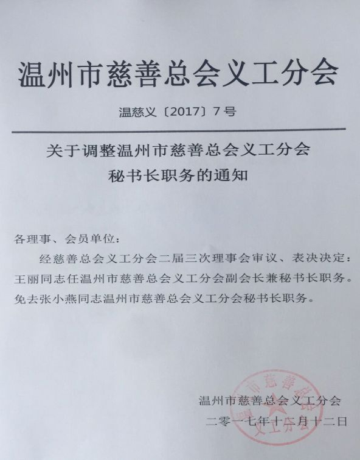

武汉市慈善总会27亿元善款上缴市财政？专业人士分析
原文链接 备份链接 微信公号“公益时报” 2020-02-11 23:34 字号 据《中国社会报》2月10日报道，武汉市慈善总会于1月27日起分4批、累计27亿元抗疫善款上缴市财政。 报道称：“武汉市慈善总会作为民政部指定的五家接收捐赠的 …
澎湃新闻记者 邓雅菲 实习生 陈紫嘉
3月6日14时，温州市慈善总会义工分会向澎湃新闻（www.thepaper.cn）证实，温州海汇敬老助老义工队负责人、温州市慈善总会义工分会副会长兼秘书长王丽于2月5日至7日窃走9500个某基金会免费发放的口罩，义工分会经讨论决定对其撤职。
3月6日，网传温州市慈善总会义工分会发布一则《关于撤销王丽职务的通报》。温州市慈善总会义工分会相关负责人向澎湃新闻证实上述通报属实。
通报显示，2月5日至7日，王丽连续三天在温州市鹿城区松台街道某基金会设置的抗击疫情物资免费发放点内，多次窃走该发放点内一次性口罩9500个（经鉴定，每个口罩价值1.9元，共计18050元），并将5000个口罩以14000元的价格、2000个口罩以5600元的价格卖给他人，其他口罩则送给他人。2月10日王丽接受公安机关调查，2月24日被移送检察机关审查起诉。2月29日，义工分会决定即日起停止王丽义工分会副会长兼秘书长职务，待司法处理后，经义工分会理事会会议通过撤销其职务。
据中国庭审公开网发布的庭审视频，3月2日，浙江省温州市鹿城法院以盗窃罪判处王丽有期徒刑7个月，并处罚金3000元。王丽当庭表示认罪。

温州市慈善总会义工分会发布的《关于撤销王丽职务的通报》。
温州市慈善总会义工分会：盗窃口罩系个人行为
温州市慈善总会义工分会一名相关负责人告诉澎湃新闻，窃走口罩事件是王丽以个人名义在温州市鹿城区松台街道浙江安福利生慈善基金会进行的。义工分会得知此事后，立即对她做出了撤职处理。义工分会只是挂靠在慈善总会下的一个分会，由一些自发做义工的人员组成，王丽并非温州慈善总会体制内人员，也不从慈善总会拿工资。

王丽于2017年12月12日被任命为温州市慈善总会义工分会副会长兼秘书长。温州市慈善总会官网 图
“这件事不发生在我们温州市慈善总会义工分会，但是现在矛头全都指向了我们，我们也感到很为难。”上述负责人称，王丽窃走的这批口罩是由王丽本人捐赠给浙江安福利生慈善基金会的，捐赠后，王丽得知有一家公益组织急需口罩分发给一线抗疫人员，便将捐赠口罩卖给对方，并希望用所得收入再购入一批口罩还给浙江安福利生慈善基金会。随后，浙江安福利生慈善基金会的工作人员予以报警。
“王丽主要是做敬老院这一方面的慈善活动。她卖7000只口罩时，是以2.8元/个的价格售出，低于市场价的5、6元/个，剩下的2500只口罩也是赠送给了他人。”该负责人说。
截至3月6日晚，上述说法未能获得浙江安福利生慈善基金会和温州市慈善总会方面的证实。
另据中国庭审公开网视频显示，3月2日，浙江省温州市鹿城法院以盗窃罪判处王丽有期徒刑7个月，并处罚金3000元。王丽当庭表示认罪。
庭审视频中，辩护人表示，王丽将大部分口罩卖给了诸暨市壹加壹义工服务中心负责人俞忠达，当时该组织在一线抗疫已无口罩。另一部分口罩被卖给了一位社区志愿者，用于支持社区志愿活动。王丽盗窃的口罩出售或赠送的对象都是急需口罩等物资的抗疫一线人员，且将剩下的口罩免费赠送给各个社区、福利院等急需防疫物资的单位，没有私自藏匿，也没有高价销售，更没有倒卖给第三方，搅乱整体的物资防疫市场。
不过，针对上述温州市慈善总会义工分会相关负责人所说的“这批口罩是由王丽本人捐赠给浙江安福利生慈善基金会”，辩护人未在庭审中提及这一信息。
曾登上“温州好人榜”“浙江好人榜”
2月26日，温州市鹿城区人民检察院在其官方微信上发布《鹿城区首例盗窃防疫物资案件犯罪嫌疑人被提起公诉》一文称，2月26日，鹿城区检察院以盗窃罪对疫情防控期间窃取口罩的被告人王某（即王丽）依法提起公诉。
文章显示，2月10日，被告人王某经公安人员电话通知后主动到案接受调查。2月16日，被告人王某的朋友代为赔偿浙江某某慈善基金会1万只一次性口罩和3480元并获得谅解。
检察官通过远程视频系统对王某某进行提审。 鹿城区人民检察院 图
2月26日，鹿城区检察院承办检察官在全面审查案件材料的基础上，通过远程视频提审系统讯问犯罪嫌疑人王某某，并让该犯罪嫌疑人在值班律师视频见证下签署认罪认罚具结书，最后以被告人王某某构成盗窃罪向法院提起公诉，并提出量刑建议。
此前，王丽因热心公益多次获关注。
据温州市妇联主办的温州妇女儿童网2018年11月6日消息，王丽出生于1985年5月24日，鹿城区人，时任温州市志愿者协会副秘书长、温州市慈善总会义工分会副会长、温州海汇敬老助老公益发展中心理事长等职务。
据《温州日报》2018年9月公布的“温州好人榜”显示，经群众推荐、基层遴选、网络投票和评委会综合审议，王丽等10人入围了2018年8月“温州好人榜”。
据浙江文明网2018年10月15日报道，由省委宣传部、省文明办和浙报集团联合推出的“浙江好人榜”10月名单揭晓，王丽因助人为乐成为上榜的18人之一。
该报道称，2004年王丽以“燃烧”为网名创立“青春牵手夕阳”敬老助老制度，已组织关爱空巢老人志愿活动1000余次，个人志愿服务时间达1万余小时。王丽还在温岭，由机关单位、建筑行业、经商个体户等组成的火速党员志愿队，发起“爱心面包”微公益活动，每晚从打烊的面包店收取没卖完的当天面包，再送往福利院、民工子弟学校、环卫之家、建筑工地等地，送出30余万个“爱心面包”，被当地称为最受欢迎的“深夜访客”。
本期编辑 常琛
推荐阅读


原文链接 备份链接 微信公号“公益时报” 2020-02-11 23:34 字号 据《中国社会报》2月10日报道，武汉市慈善总会于1月27日起分4批、累计27亿元抗疫善款上缴市财政。 报道称：“武汉市慈善总会作为民政部指定的五家接收捐赠的 …
原文链接 备份链接 现在校园里还没有人戴口罩，但国内的亲人总是打电话说美国疫情严重，出门一定要戴口罩，这让他非常为难。 文｜李 莹 今年春节，我到美国旅游，结果因为新冠肺炎疫情，回程航班被取消了……一言难尽。这是我滞留美国的第42天，西 …
原文链接 备份链接 凤凰新闻客户端 凤凰网在人间工作室出品 打开凤凰新闻客户端，搜索「在人间」并关注 我八十年代从北京来美国留学，当过兵，参加过海湾战争，如今在美国定居30多年了，现在德州开猎场。德州是美国本土最大的州，有很多大的农场，这 …
原文链接 备份链接 搜于特现主营业务为品牌服饰运营和供应链管理。其近期股价上涨和公司公告拟投产生产口罩相关。然而公告发布近1个月后，公司相关产品仍未投产。同时，在公司股价上涨后，公司股东则开始减持 文 |《财经》记者 杨秀红 张建锋 编 …
原文链接 备份链接 截止3月6日下午，美国共有20个州出现新冠状肺炎，确诊316例，其中14名患者死亡，死者多来自西雅图地区的同一个养老院。美国疫情到底怎样，看看来自西雅图、旧金山、纽约三地的疫情日记。 西雅图 文／CC 周二孩子们继续待 …